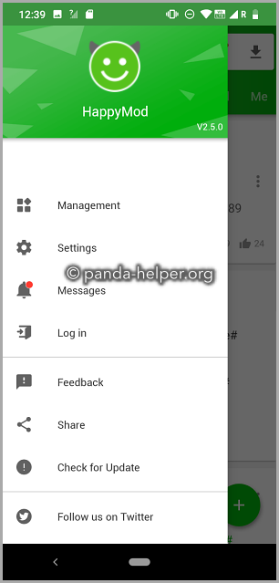

HappyMod 深度盘点：从成功率到实机验证，一个社区驱动的 mod 市场长什么样
HappyMod 不只是 mod 聚合地——成功率统计、实机演示标记、社区评论三重过滤机制构成了它的信任基底。本文按能力域逐项拆解这个生态，帮你判断它值不值得长期留在手机里。
如果你接触过 Android 上的修改版应用，大概率听过 happymod官网 的名字。但大多数人对它的认知停留在「一个下 mod 的地方」，真正用起来才发现，它的价值远不止资源聚合。这篇文章从能力域出发，把这个平台的信任机制、社区生态、信息渠道和便捷性逐项铺开——读完你会知道它为什么能在同类产品里站住脚，以及有没有什么值得警惕的短板。
版本筛选：三重信号帮你少踩坑
HappyMod 最核心的竞争力其实不在资源量，而在它帮你判断「这个版本能不能装」的那套机制。同类平台要么全靠用户自己撞大运，要么只给一个模糊的「热门」排序——HappyMod 给出的是一个三层信号体系，让你在下载前就能建立合理预期。
第一层是成功率。每个版本卡片上的百分比不是随便填的数字，它来自累计的用户反馈：装过、用过、标记为可用或不可用的人越多，这个数字越接近真实。但成功率有个盲区——它是累计统计，原版应用大更新之后，旧版 mod 可能瞬间集体失效，而成功率数字还没来得及掉下来。这时候就要靠第二层信号补位了。
第二层是Video verified 标记。部分版本卡片下方会多出一行小字，说明这个版本附带了实机演示视频。上传者或早期用户把运行过程录下来，作为「真的能用」的佐证。这个标记的好处是可核对——装之前你就能亲眼看到它在某台设备上跑起来的样子，演示用的机型和系统版本越接近你自己的，参考价值越大。成功率回答「多少人验证过能用」，Video verified 回答「有没有眼见为实的证据」，两者互补而不是替代。

第三层是评测与评论区。成功率告诉你结论，评论区告诉你原因。学会读评论，等于借用了成百上千个先行用户的实测经验。评论区里最值钱的信息不是「好用」「垃圾」这种大白话，而是机型与系统相关的反馈、标注了时间的失效通知、以及负面但不致命的体验细节——比如「功能正常但要手动跳过弹窗」。
一个版本理想的状态是三层信号全部正向：成功率高位、有 Video verified 标记、最近评论区没有集中失效反馈。养成「先看标记、再看评论、最后下载」的顺序，能省掉大量试错。
社区生态：你既是受益者也是贡献者
HappyMod 的信任机制之所以能运转，全靠普通用户装完之后留下的反馈。这个设计最有意思的地方在于，它不是单向的「平台给你资源」，而是一个闭环：你花十秒留的一条评论或打分，直接汇入下一个人看到的那个百分比里。
打分的基准很简单：5 星是装上就能用、功能与描述一致；3~4 星是基本可用但有瑕疵；1~2 星是无法使用或描述严重不符。关键是实事求是——因为自己设备不兼容打的低分，会误导同机型之外的用户。评论的价值同样在于精确：写清设备环境、使用时长、闪退触发步骤，比一句「垃圾」有用一百倍。
评测和评论是两回事。评测是结构化的综合打分与体验总结，通常更长更系统；评论是轻量的即时反馈，数量大时效强。两者都在详情页下方，配合着看才能建立完整印象。
信息渠道：不只有一个入口
HappyMod 的信息入口比表面看起来丰富。主界面顶栏有四个标签——精选、游戏、应用、小游戏，中间还夹着一个 Telegram 标签。
Telegram 标签是应用内聚合的官方频道内容，点开它不需要切换应用就能浏览频道里发布的最新公告和动态。追新的用户可以常看看，新版本上线、检测机制调整这类影响全站的通知通常会先在频道发布。不想用也没关系，这个标签纯粹是信息入口，不使用不影响任何功能。
应用内部同样有消息和通知入口，用于查看自己发布的评论状态、收到的社区互动。这些分散的渠道覆盖了不同需求：想追新看频道，想跟进自己的反馈看站内消息，想找新资源逛四个内容标签——更细的玩法可以翻happymod文档。

短板也要说
说几个实际用下来的局限，不算致命但值得知道：
第一，社区活跃度直接决定信息质量。成功率、评论区、Video verified 标记这套体系本质上是众包的——如果某个冷门应用没人反馈，它的成功率数字就是空架子，评论区也是冷清的。热门应用信号充分，冷门应用就得自己试。
第二，Telegram 相关内容依赖网络环境。如果所在环境访问 Telegram 不畅，标签页可能加载缓慢或空白，这时切回精选标签继续用就行，不影响核心功能。
第三，修改版本身的风险不在平台控制范围内。HappyMod 的验证机制解决的是「这个版本能不能跑起来」的问题，不解决「这个版本有没有加料」的问题——来源不明的第三方修改始终有风险，这一点没有任何平台能替你把关。
什么样的人该用它
如果你是下面几类人，HappyMod 值得留在手机里：
愿意为「更顺手」花时间的 Android 重度用户。它不是最省事的平台——你需要学会看标记、读评论、理解成功率的局限——但一旦掌握这套方法论，能以很低的试错成本找到真正好用的版本。社区沉淀的那套验证机制，是懒汉福利也是精耕者的工具。
追新党。Telegram 频道和版本卡片上的更新提示让你能第一时间知道新版本出现，Video verified 标记帮你快速判断值不值得尝试。不用蹲论坛刷帖子，打开应用就能看到社区在折腾什么。
喜欢给社区留点东西的人。装完花十秒打个分、留条评论，这个动作在 HappyMod 里的实际影响力可能比你想象的大——你改变的是下一个人看到的成功率数字。不想贡献也完全没问题，但如果你习惯了「用了就反馈」，这个平台会给你比其他地方更直接的正反馈。
总的来说，HappyMod 的核心竞争力不是资源量而是信任机制。在一个良莠不齐的市场里，它用三层信号体系把「能不能装」这个最基础的问题变得可判断、可核对、可预见。剩下的，就是你愿不愿意花那十秒钟读一眼评论了。顺带提一句，它的使用指南和版本说明，文档同步维护在 GitHub、Gitee、GitCode，国内访问后两者会更顺畅。